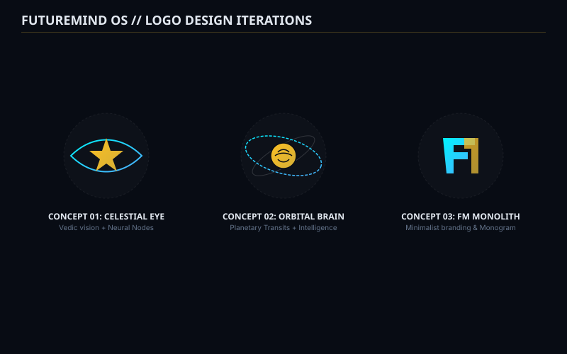
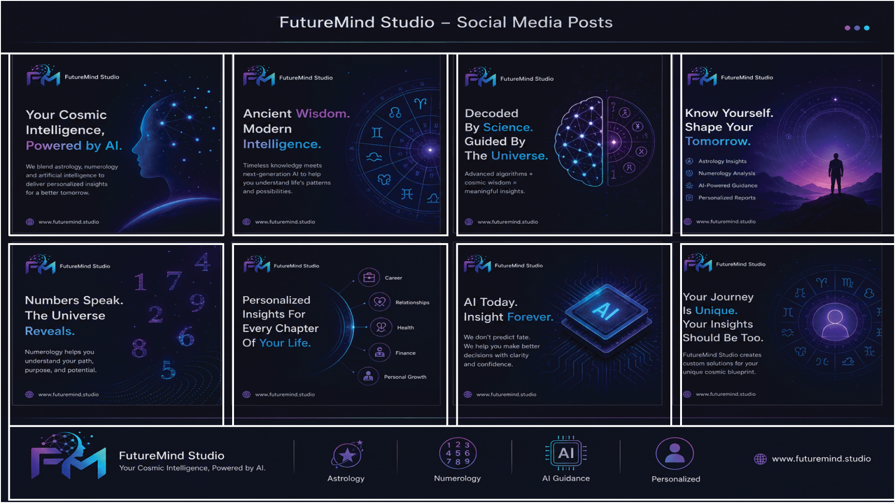
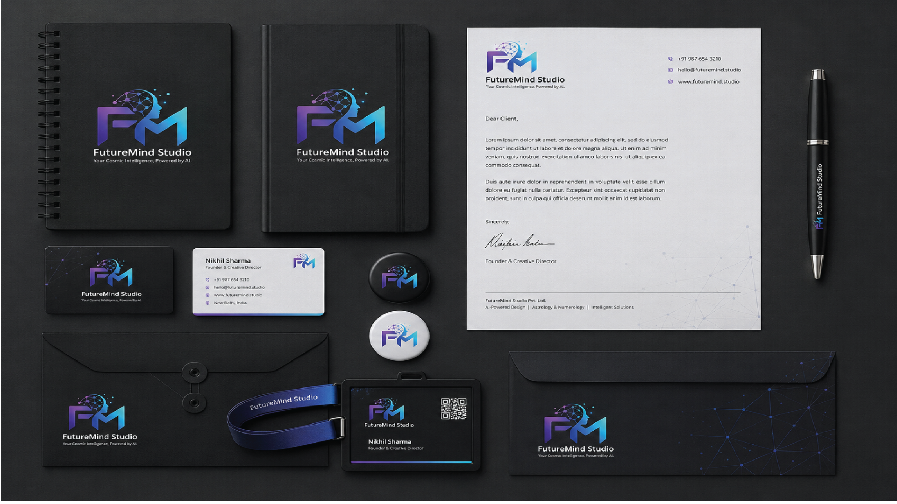

Logo Exploration & Authentic Brand Artworks
The logo synthesizes AI neural node architectures with celestial orbital rings. Below is the authentic design development kit including stationery, social creatives, and physical mockups.
Logo Concept Iterations (Celestial Eye, Orbital Brain, FM Monogram)


